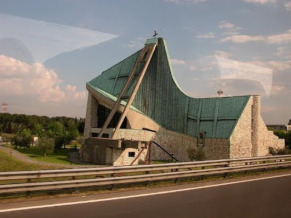
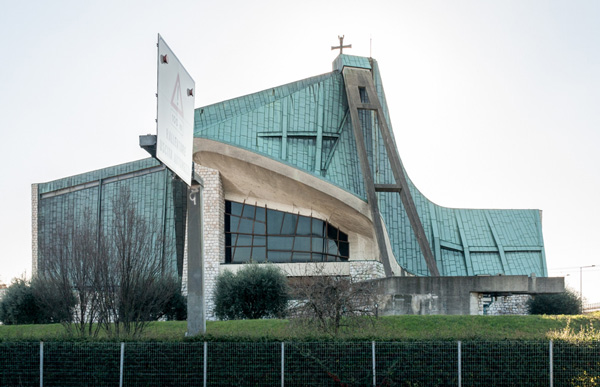
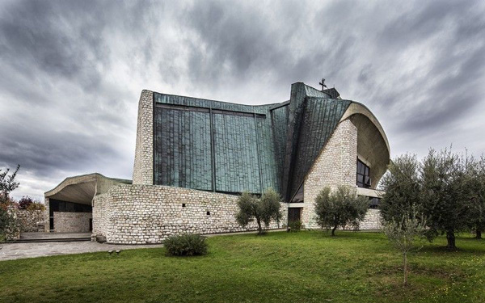
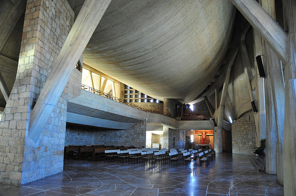
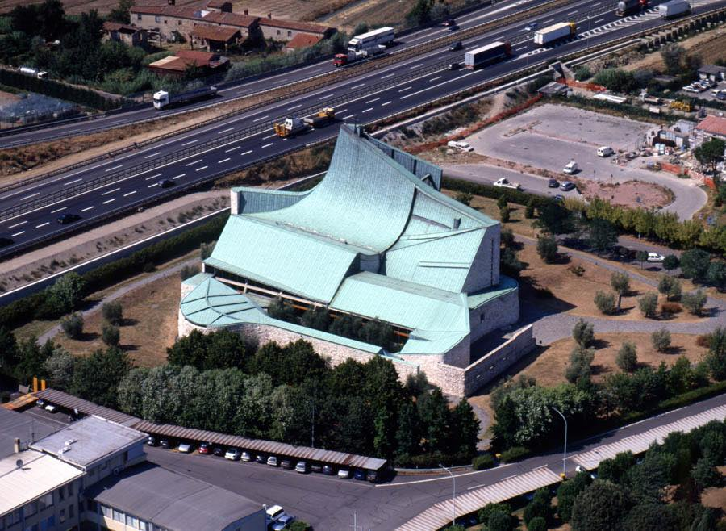
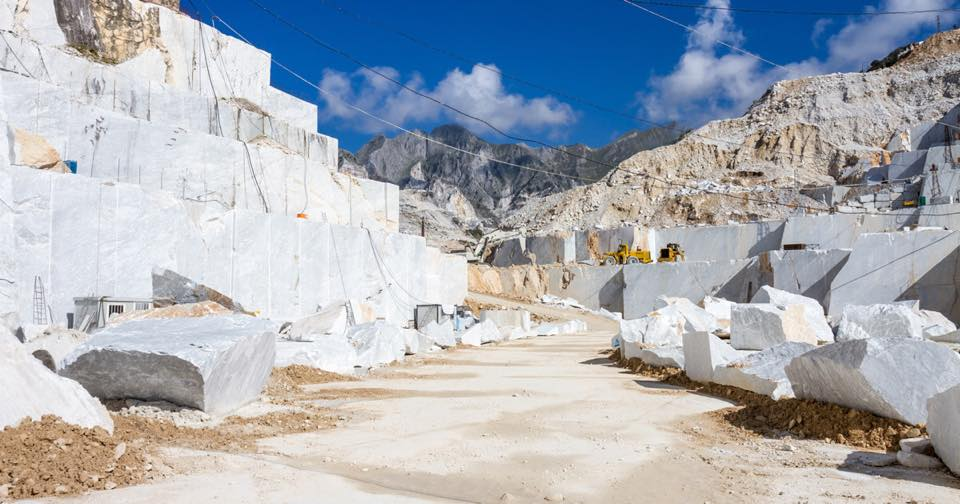
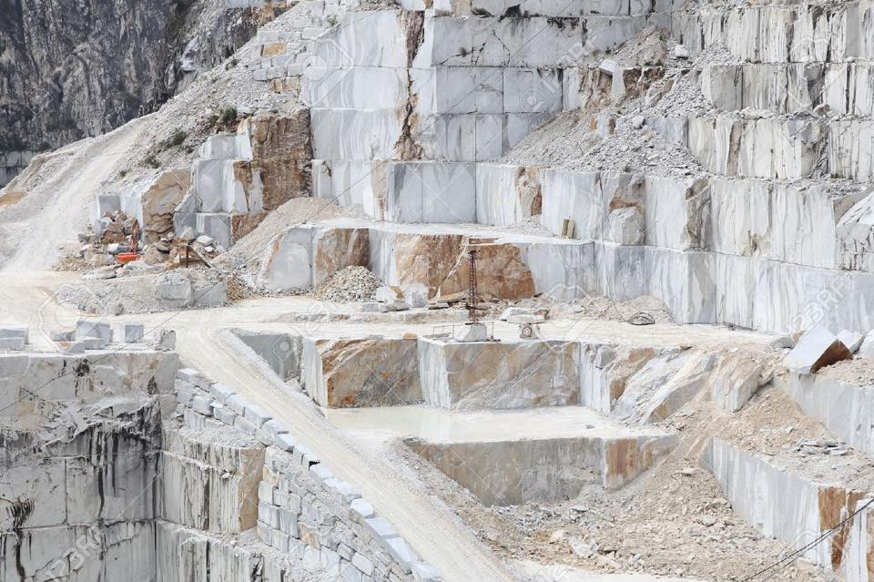

The Chiesa dell'Autostrada - literally the Highway Church - is probably one of the most unexpected buildings I have ever encountered. Located at the halfway point of the A1 Autostrada del Sole that connects Rome and Milan via Florence, the church was commissioned by the company that built the highway in order to commemorate those workers who lost their lives in its construction (particularly in building tunnels). A rare example of truly innovative modern architecture in Tuscany, it was designed by the Pistoia-born architect Giovanni Michelucci in 1960. Plus on our shorter drive (Siena-Genoa) today we passed Carrara, home of that 1970s classic - the avocado bathroom suite.






